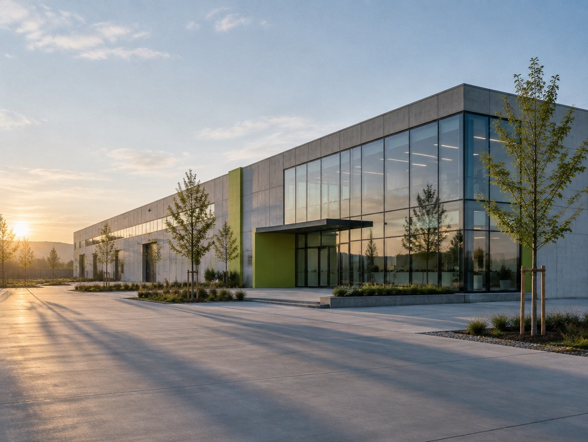

01 · Команда
Сервіси страхового бюро «Компаньйон»
Страхування, яке працює на вас.
Підбираємо програми, супроводжуємо клієнтів і допомагаємо врегулювати збитки. Представляємо ваші інтереси на кожному етапі.
Напрями страхування · Захист для ваших пріоритетів

02 · Бізнес
Майно та відповідальність
03 · Транспорт
Автомобілі, вантажі та логістика
01 / Навіщо брокер
Ваш представник у страхуванні
Починаємо з ваших потреб: що важливо захистити, які ризики має бізнес і як працює чинна програма. На цій основі порівнюємо пропозиції страхових компаній та пояснюємо відмінності в умовах.
Ви ухвалюєте рішення з розумінням покриття, лімітів, виключень і вартості. Ми допомагаємо узгодити умови та супроводжуємо програму після укладення договору.
02 / Наші послуги
Від підбору програми до врегулювання збитків
Беремо на себе роботу з договорами, пропозиціями страхових компаній і зверненнями клієнтів.
01
Консультування
Аналізуємо ризики й чинні договори. Пояснюємо покриття, ліміти та виключення, формуємо вимоги до програми.
02
Тендер
Збираємо пропозиції страхових компаній, порівнюємо їх за однаковими критеріями та узгоджуємо умови обраної програми.
03
Супровід програми
Допомагаємо впровадити програму, вносити зміни та вести документообіг. Відповідаємо на запитання клієнтів і координуємо звернення.
04
Врегулювання збитків
Супроводжуємо страхову подію, допомагаємо з документами та відстоюємо вашу позицію у спілкуванні зі страховою компанією.
03 / Врегулювання збитків
Ми завжди на стороні клієнта
У складний момент важливо знати, до кого звернутися. Допомагаємо визначити порядок дій, беремо на себе комунікацію зі страховою компанією і представляємо ваші інтереси під час розгляду справи.
01
Розбираємося в обставинах
Уточнюємо, що сталося, перевіряємо умови договору та пояснюємо, як повідомити про подію і які строки врахувати.
02
Допомагаємо з документами
Підказуємо, що потрібно для розгляду, перевіряємо комплектність заяв, рахунків та інших підтверджень.
03
Відстоюємо вашу позицію
Взаємодіємо зі страховою компанією, з’ясовуємо спірні питання й допомагаємо аргументувати звернення умовами договору.
04
Супроводжуємо до завершення
Стежимо за строками розгляду, пояснюємо рішення та подальші дії. За погодженого відшкодування контролюємо питання виплати.
04 / Наша спеціалізація — корпоративне ДМС
Підтримка для працівників і HR
50+років медичної практики в команді, яка супроводжує ваше медичне страхування
Наша команда розуміє медичні документи та умови страхових програм. Допомагаємо розібратися зі зверненням і взаємодією зі страховою компанією та асистансом.
Працівникам — пояснюємо порядок звернення, покриття програми та необхідні документи.
HR-команді — допомагаємо координувати страхові питання працівників і розбирати складні ситуації.

05 / Результат для вас
Ваш страховий відділ на аутсорсингу
Підбір програм, щоденний супровід і врегулювання збитків — без витрат на утримання власного відділу.
01
Аналіз ризиків
Розбираємо, що саме потребує захисту: активи, зобов’язання за договорами, вантажі та люди.
02
Підбір умов
Формуємо запит до ринку і зіставляємо покриття, ліміти, винятки, вартість і сервіс.
03
Супровід
Ведемо договір після підписання: зміни в програмі, документи, питання команди.
04
Врегулювання
Допомагаємо врегулювати страховий випадок і відстоюємо ваші інтереси перед страховою компанією.
Ваша команда зосереджується на бізнесі
Ми беремо на себе роботу зі страховими питаннями та взаємодію зі страховими компаніями.
Ми робимо страхування зрозумілим
Обговорімо ваші страхові потреби
Розкажіть про ваш бізнес або чинну програму. Допоможемо визначити, з чого почати.